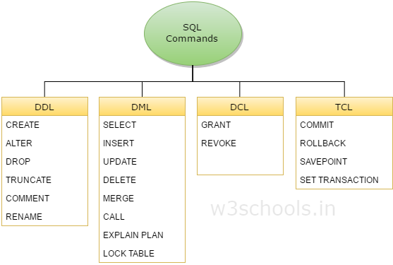

What are DDL and DML?
I have heard the terms DDL and DML in reference to databases, but I don't understand what they are.
What are they and how do they relate to SQL?
Answer

The following is adapted from here MySQL What is DDL, DML and DCL?:
DDL
DDL is short name of Data Definition Language, which deals with database schemas and descriptions, of how the data should reside in the database.
- CREATE – to create database and its objects like (table, index, views, store procedure, function and triggers).
- ALTER – alters the structure of the existing database.
- DROP – delete objects from the database.
- TRUNCATE – remove all records from a table; also, all spaces allocated for the records are removed.
- COMMENT – add comments to the data dictionary.
- RENAME – rename an object.
DML
DML is short name of Data Manipulation Language which deals with data manipulation, and includes most common SQL statements such SELECT, INSERT, UPDATE, DELETE etc, and it is used to store, modify, retrieve, delete and update data in database.
- SELECT – retrieve data from one or more tables.
- INSERT – insert data into a table.
- UPDATE – updates existing data within a table.
- DELETE – delete all records from a table.
- MERGE – UPSERT operation (insert or update)
- CALL – call a PL/SQL or Java subprogram.
- EXPLAIN PLAN – interpretation of the data access path.
- LOCK TABLE – concurrency control.
DCL
DCL is short name of Data Control Language which includes commands such as GRANT, and mostly concerned with rights, permissions and other controls of the database system.
- GRANT – allow users access privileges to database.
- REVOKE – withdraw users access privileges given by using the GRANT command.
TCL
TCL is short name of Transaction Control Language which deals with transaction within a database.
- COMMIT – commits a transaction.
- ROLLBACK – rollback a transaction in case of any error occurs.
- SAVEPOINT – a point inside a transaction that allows rollback state to what it was at the time of the savepoint.
- SET TRANSACTION – specify characteristics for the transaction.
Suggest
DDL is Data Definition Language : it is used to define data structures.
For example, with SQL, it would be instructions such as create table, alter
table, ...
DML is Data Manipulation Language : it is used to manipulate data itself.
For example, with SQL, it would be instructions such as insert, update,
delete, ...